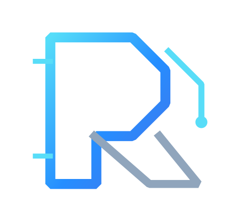

Start with the real need
We listen, clarify the goal and shape the right scope before choosing a tool.

RYNTRIQ.SOLUTIONRYNTRIQ helps growing businesses move forward with purposeful websites, reliable data work and automation made around the way you work.
We bring design, careful execution and useful technology together—so your digital presence feels clear, your information stays dependable, and repetitive work takes less of your day.
A distinctive, responsive website that tells your story clearly and gives people a confident next step.
Accurate entry, thoughtful cleanup and record matching that make information easier to trust and use.
Small, focused tools that reduce repeat work and help your everyday process run more smoothly.
Good digital work is more than a polished screen. It should solve the real problem, be simple to use, and leave room for your business to grow.
Discover our approach↗We listen, clarify the goal and shape the right scope before choosing a tool.
Clear interfaces and practical workflows should feel natural to the people using them.
Thoughtful foundations make future changes easier to manage and extend.
A few clearly labelled concept pieces to show our direction—these are demonstrations, not client projects or claimed results.
Tell us what you’re trying to improve. We’ll start with a clear conversation and suggest a sensible next step.
Start a conversation↗